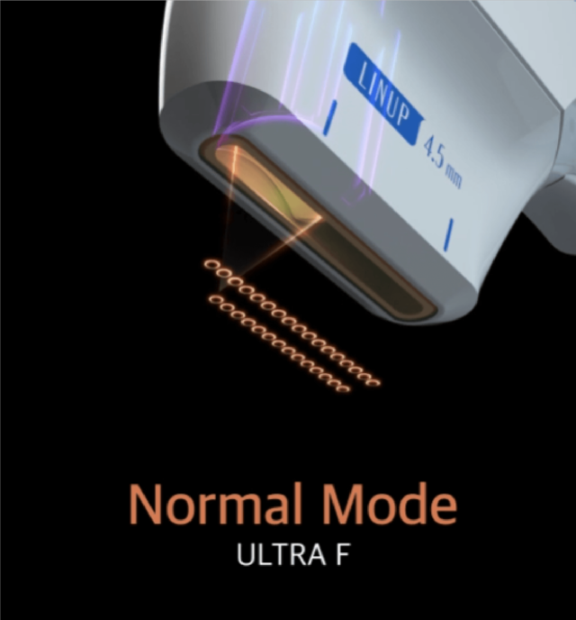
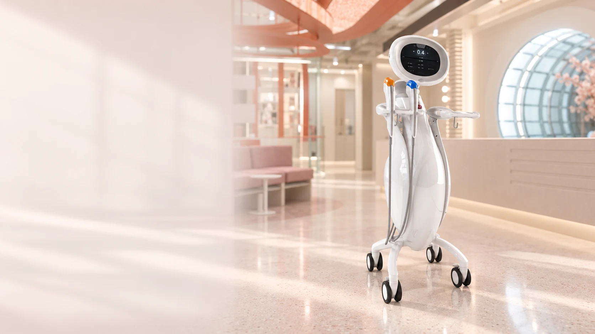
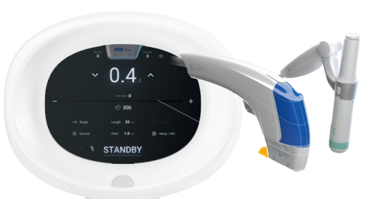
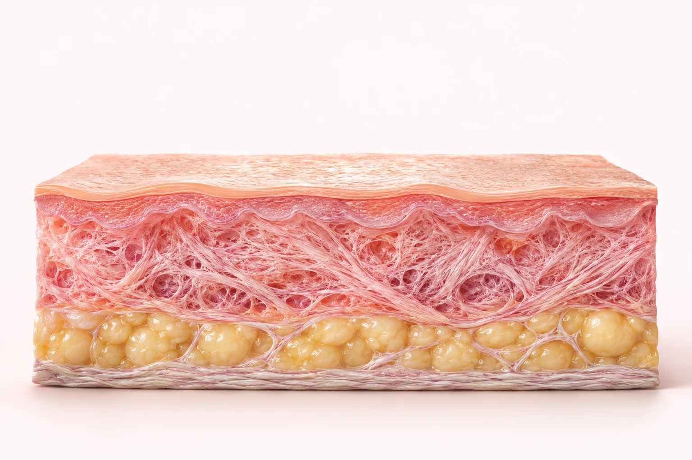
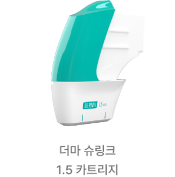
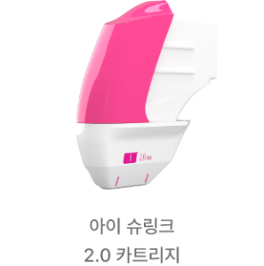
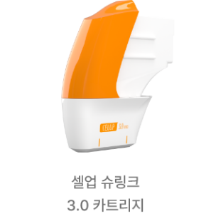
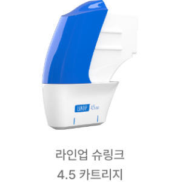
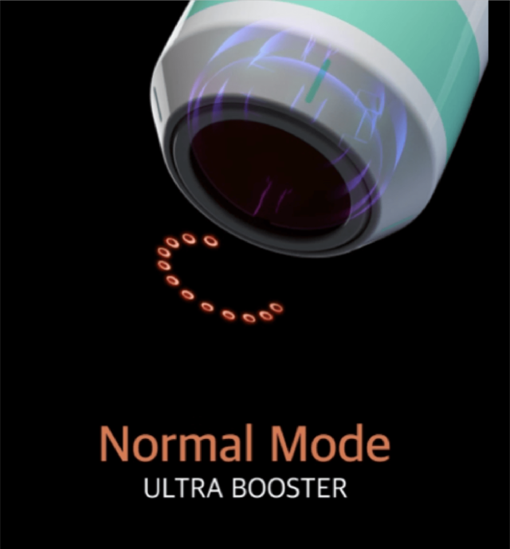

Ultra F
울트라 F
일자형 카트리지로 부위와 깊이에 맞는 시술을 계획합니다. 1.5·2.0·3.0·4.5mm 카트리지 구성을 살펴볼 수 있습니다.

Lift your
own way.
깊이부터 다르게.
나에게 맞는 방식으로.
슈링크유니버스는 집속 초음파 에너지를 이용하는 리프팅 장비입니다. 피부 상태와 부위에 맞춰 카트리지의 깊이와 조사 방식을 선택합니다.

샷 수만큼 중요한 것은, 어디에 어떻게 적용하는가입니다.
A deeper
understanding.
집속 초음파는 선택한 깊이에 에너지를 집중시켜
작은 열 응고점을 형성합니다.
깊이를 눌러 에너지가 모이는 위치를 살펴보세요.


Derma · 1.5 mm
1.5mm 초점 카트리지입니다. 피부 두께와 부위의 특성을 살펴 적용 여부와 강도를 정합니다.

I · 2.0 mm
2.0mm 초점 카트리지입니다. 섬세한 부위일수록 피부 상태와 주변 구조를 함께 확인합니다.

Cellup · 3.0 mm
3.0mm 초점 카트리지입니다. 탄력 저하의 양상과 조직 두께를 확인해 시술 계획에 반영합니다.

Linup · 4.5 mm
4.5mm 초점 카트리지입니다. 깊은 층의 구조와 볼륨 분포를 고려합니다. 모든 얼굴에 같은 깊이를 적용하지 않습니다.
표시된 수치는 카트리지의 초점 깊이입니다. 실제 조직의 위치와 두께는 개인·부위별로 다르며, 진료 후 적합한 깊이를 결정합니다.
Two approaches.
One thoughtful plan.
얼굴의 넓은 면부터 작은 굴곡까지.
적용 부위와 피부 상태에 따라 접근을 달리합니다.

Ultra F
일자형 카트리지로 부위와 깊이에 맞는 시술을 계획합니다. 1.5·2.0·3.0·4.5mm 카트리지 구성을 살펴볼 수 있습니다.

Ultra Booster
펜 형태의 핸드피스로 굴곡이 있거나 작은 부위에 접근합니다. 1.5·3.0·4.5mm 카트리지로 부위별 계획을 세웁니다.
A choice
of focus.
슈링크유니버스는 일반(Dot) 모드와 MP 모드를 제공합니다. 시술 부위와 목적에 따라 의료진이 적합한 모드를 선택합니다.
에너지를 점 형태의 초점으로 전달합니다. 조사 위치와 간격을 고려해 적용합니다.
미세한 펄스 방식으로 에너지를 전달합니다. 같은 샷 수라도 모드와 설정을 함께 살펴야 합니다.

겉으로 보이는 처짐과 피부의 두께를 함께 살펴요.
Your face.
Your focus.
같은 리프팅도 출발점은 다릅니다.
고민을 선택해 상담에서 확인할 내용을 살펴보세요.
얼굴의 볼륨이 적거나 피부가 얇은 경우에는 특히 세심한 상담이 필요합니다. 개인 상태에 따라 다른 관리가 제안될 수 있습니다.
Designed for you.
정해진 샷 수를 그대로 적용하기보다
지금의 피부를 먼저 살펴봅니다.
피부 두께, 볼륨, 처짐의 양상과 이전 시술 이력을 확인합니다.
적용 부위와 카트리지, 강도, 조사 방식을 의료진과 정합니다.
시술 중 느껴지는 자극을 전달하고, 이후 피부 반응과 경과를 살핍니다.
After the
moment.
자극이 적은 보습제를 사용하고 자외선 차단을 꼼꼼히 해주세요.
시술 직후 강한 마사지나 스크럽은 피해주세요. 사우나·격한 운동 등의 제한 기간은 병원 안내를 따릅니다.
붉음, 붓기, 압통 등이 나타날 수 있습니다. 통증이 심해지거나 물집, 감각 변화 등이 지속되면 병원에 연락해주세요.
Q&A
시술 전 궁금했던 내용을
차근차근 확인해보세요.
집속 초음파를 이용해 선택한 깊이에 열 에너지를 전달하는 시술입니다. 개인의 피부 상태를 살펴 카트리지와 조사 방식을 정합니다.
슈링크유니버스는 일반 모드와 MP 모드, 울트라 F와 울트라 부스터 핸드피스를 제공합니다. 새 기능의 수보다 본인의 부위와 피부 상태에 맞는 계획이 중요합니다.
샷 수만으로 시술의 적합성을 판단하지 않습니다. 적용 면적, 피부 두께, 카트리지 깊이와 에너지 설정을 함께 고려합니다.
따끔함이나 열감 등 자극이 느껴질 수 있으며 부위와 설정, 개인에 따라 차이가 있습니다. 통증에 민감한 편이라면 상담 시 알려주시고 시술 중 불편함도 바로 전달해주세요.
변화가 느껴지는 시점과 정도는 개인마다 다릅니다. 시술 직후 모습만으로 판단하기보다 피부 반응과 경과를 의료진과 함께 확인합니다.
일정한 간격을 모든 분에게 적용하지 않습니다. 현재 피부 상태, 이전 시술 시점, 시술 후 경과를 바탕으로 다음 계획을 정합니다.
볼륨이 적거나 피부가 얇은 부위는 주의가 필요합니다. 볼 패임에 대한 걱정, 이전 리프팅 경험을 알려주세요. 진료에 따라 적용 범위를 줄이거나 다른 관리를 권할 수 있습니다.
다른 에너지 시술이나 주사 시술을 계획하고 있다면 종류와 시기를 함께 알려주세요. 피부 상태와 회복을 고려해 병행 여부, 순서와 간격을 정합니다.
일시적인 붉음, 붓기, 압통 등이 생길 수 있으며 드물게 화상이나 감각 변화 등이 발생할 수 있습니다. 시술 부위에 과한 자극을 피하고 이상 반응이 지속되면 병원으로 연락해주세요.
병행 여부와 시술 순서·간격은 진료 후 결정합니다.
나에게 맞는 이벤트를 펼쳐보세요.

A moment for yourself.
홍대·합정 뷰티블라썸의원
피부 고민과 지금까지 받은 시술을 함께 알려주세요.